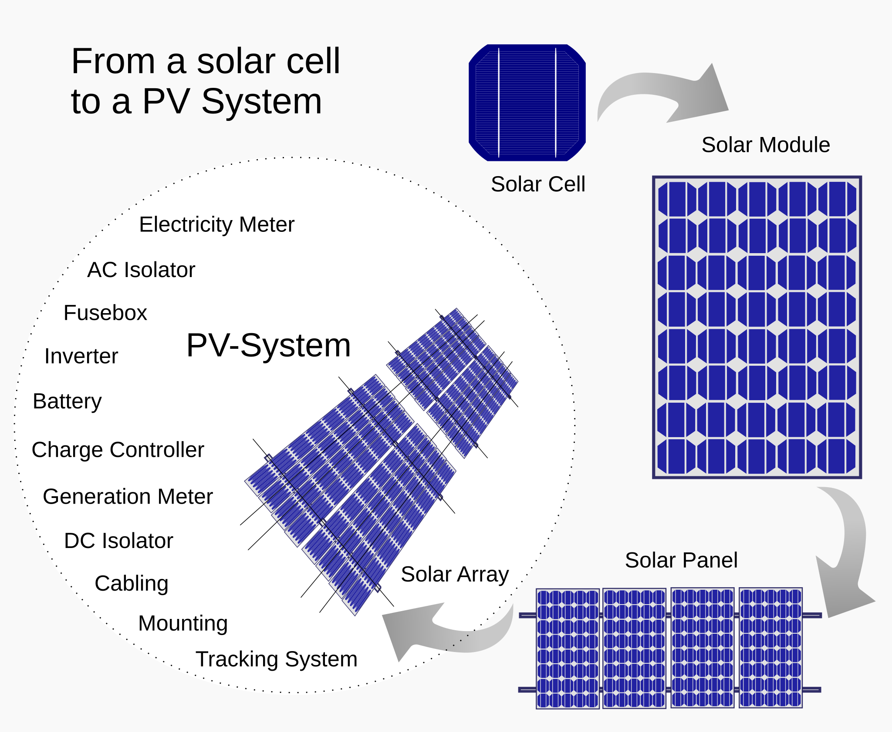

solar panels revision 5337
^ Parts infobox ^^
| image | Solar-panels-60-cell.scad.png |
| designer | |
| date | |
| parts | [[solar_cells|Solar cells]], [[solder|Solder]], [[silicone_resins|Silicone resins]] / [[titebond_ii|Titebond II]]?, [[frames|Frames]], [[bolts|Bolts]], [[nuts|Nuts]], [[sheets|Sheets]], [[wires|Wires]], [[electrical_connectors|Electrical connectors]] |
| techniques | |
| tools | |
| stl | |
| git | |
Introduction
Many projects require power in some form. Photovoltaic panels provide a rugged, durable, mass produced, and inexpensive platform for the system's energy production needs.
Challenges
Similar to battery packs, balancing solar cells helps to ensure maximum power production and longevity. Sealing cells against the weather and oxidization are challenges. As is encasing the cells in a durable medium which is transparent to the light wavelengths converted to electricity by the cells. Adapting frames to fit standard sizes of pre-manufactured panels in a variety of configurations is ongoing.
Approaches

The most typical size used for residential installations is 65 inches by 39 inches, while the common size for commercial applications is 77 inches by 39 inches. The smaller size is a better fit for residential projects to maximize available roof space. Most commercial projects have hundreds of panels and this is why the slightly larger panel is a more ideal choice. SunPower is the exception to length and width. Their residential panel is 61 inches by 41 inches, slightly shorter and a little wider than standard panels. Individual solar cells typically measure 125mm square and produce approximately 0.5v @ 3W each.
{| class="wikitable"
|+ Solar panel sizes
|-
! Image !! Number of cells !! Width !! Height
|-
| {{:solar-panels-60-cell.scad.png|}} || 60 || 990mm / 39 inches || 1651mm / 65 inches
|-
| {{:solar-panels.scad.png|}} || 72 || 990mm / 39 inches || 1955mm / 77 inches
|-
| || Sunpower || 41 inches || 61 inches
|}
Mounting to frames
Development targets
Use hoses, 
References
<youtube>_2UxOY_wpFo</youtube>
<youtube>EEOBYulZ_fI</youtube>
<youtube>6mdBnIt0xIQ</youtube>